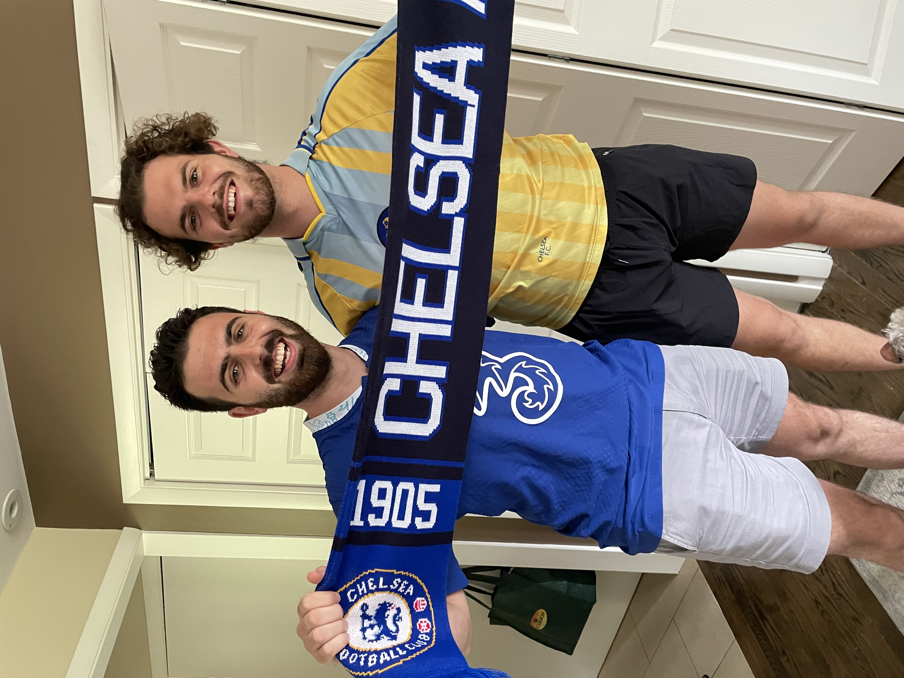
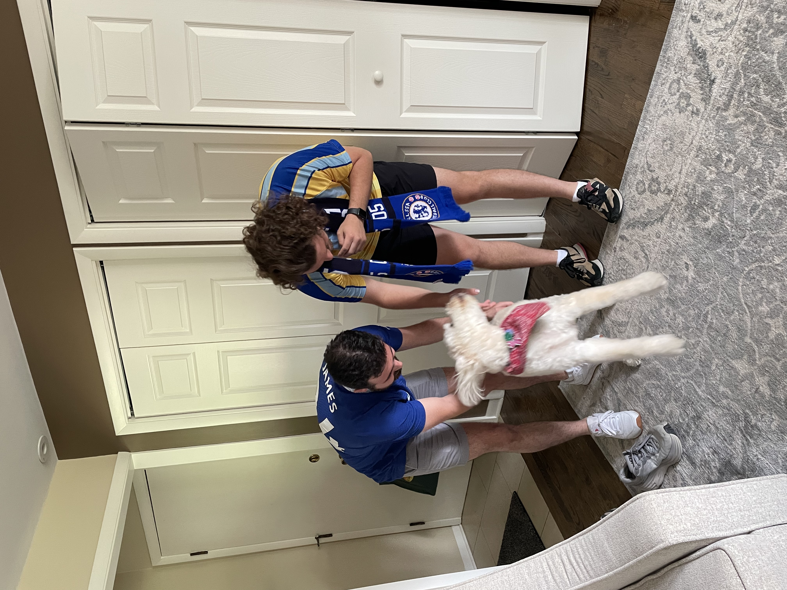
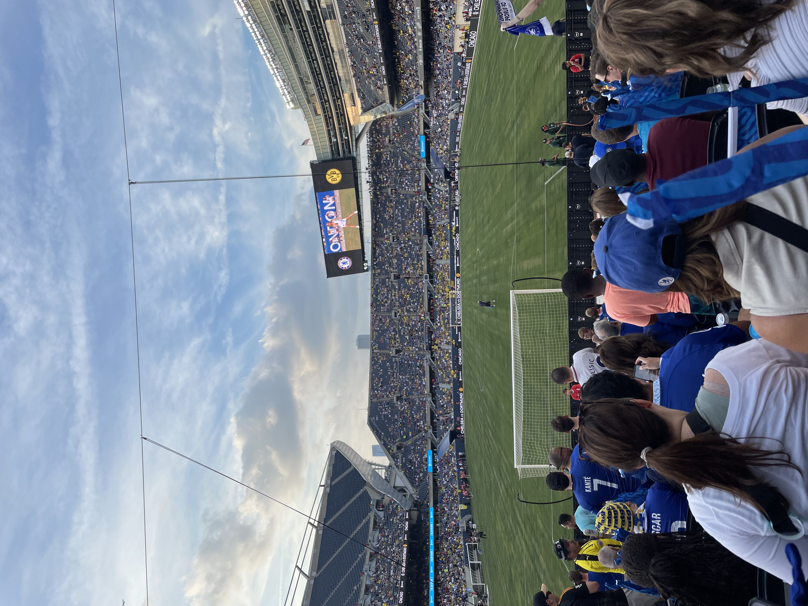
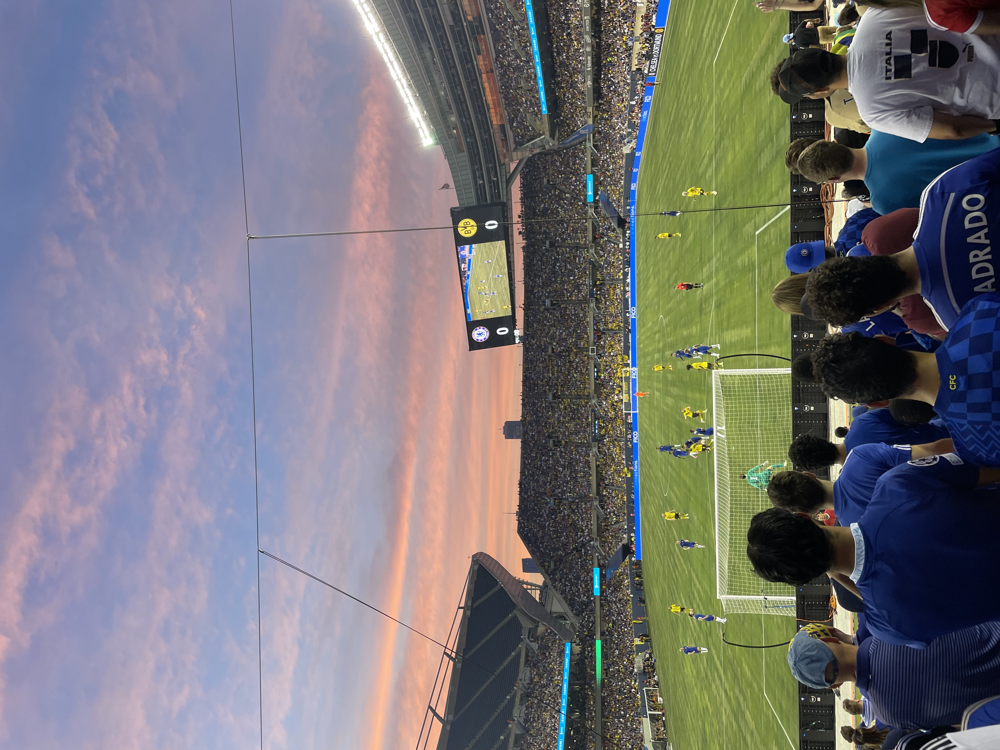
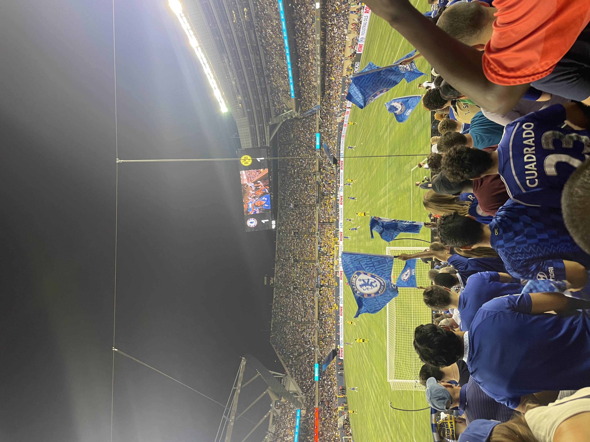
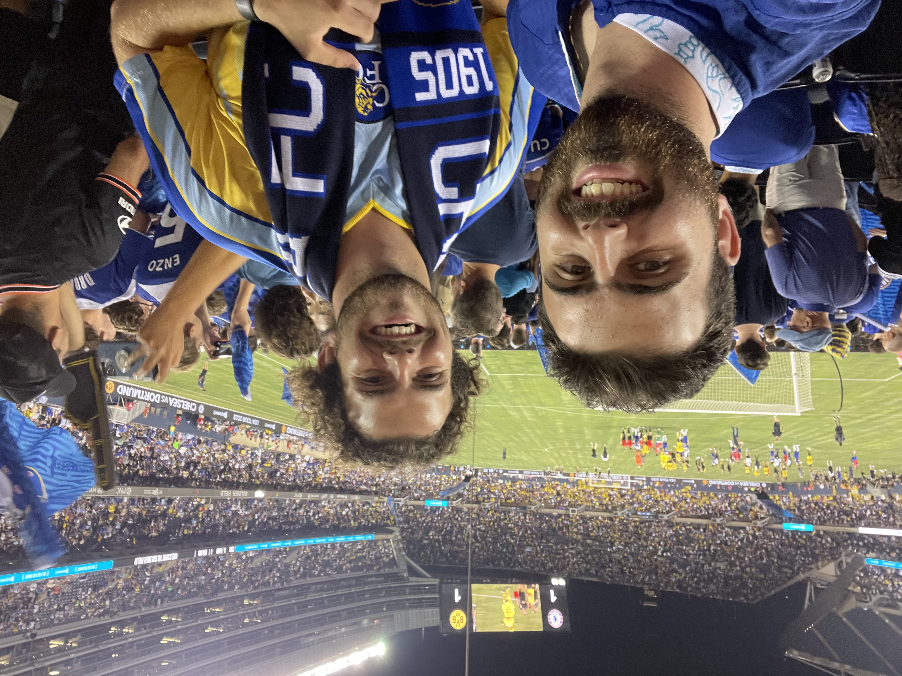

Teddy and Anthony Maiorca hold up a Chelsea FC scarf before leaving for Soldier Field in Chicago, IL, to see the team play for the first time on Aug. 2, 2023.
.

The brothers say goodbye to their dog, named Chelsea, before departing for the match. Chelsea’s name is unrelated to the team, but was the inspiration behind cheering on Chelsea FC 12 years ago.
A groundskeeper makes minor fixes to the grass before the game begins between Chelsea FC and BVB Dortmund

As the sun begins to set during the second half, the two teams remained locked at 0-0, both searching for a way through the opposition.

Chelsea FC fans wave flags around the stands after the team scored in the 90th and final minute of the game to tie 1-1. .

Teddy and Anthony Maiorca smile for a photo after the final whistle had sounded. .

Chelsea FC players applaud the fans that came to see them play in Chicago. .